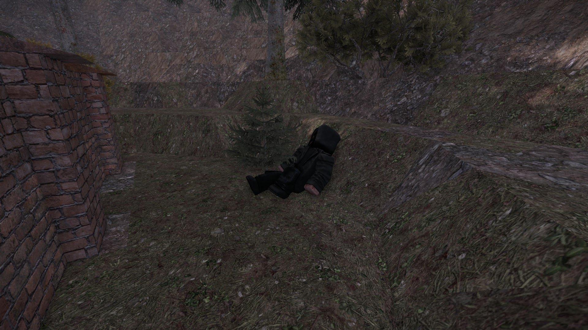
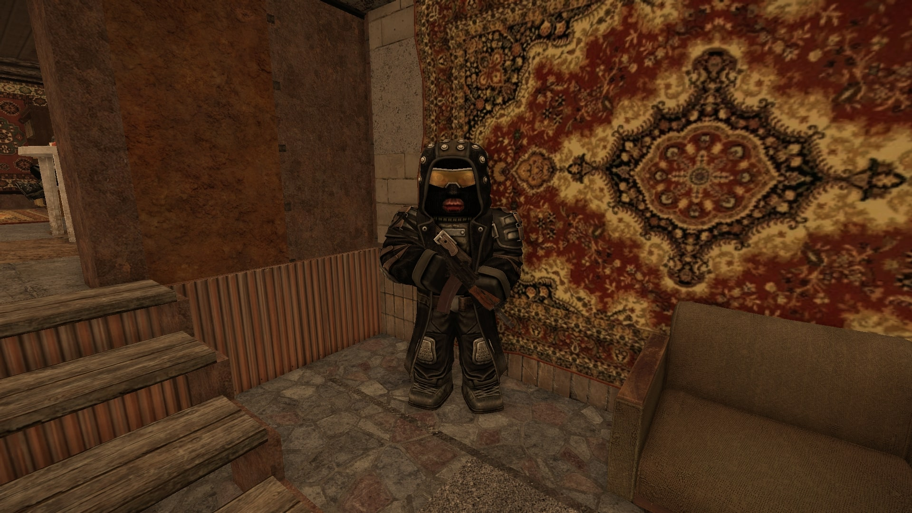
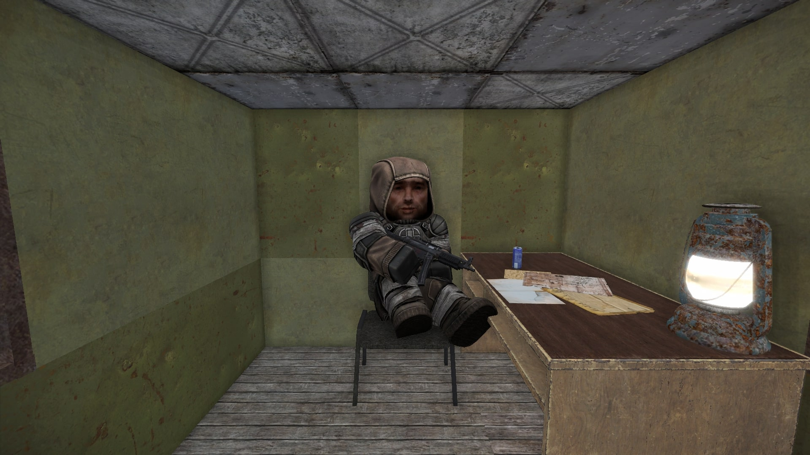
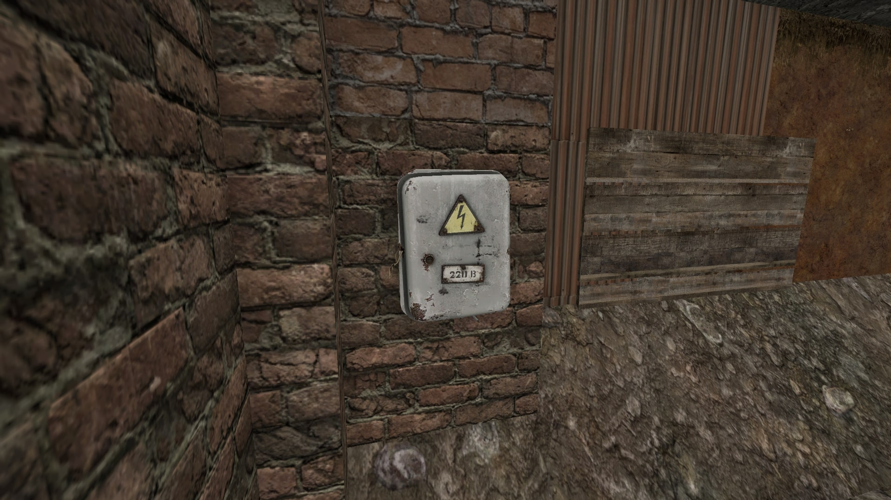
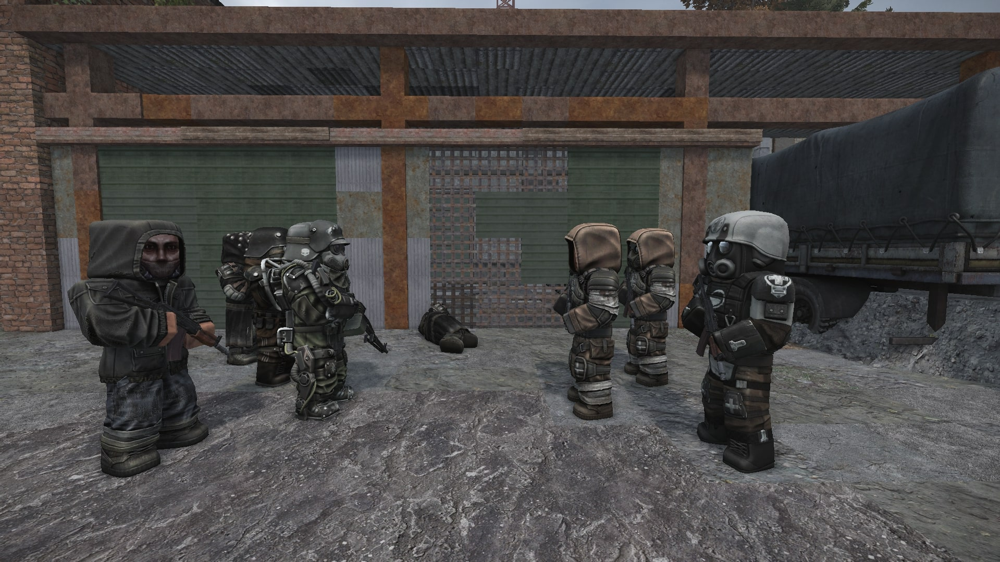
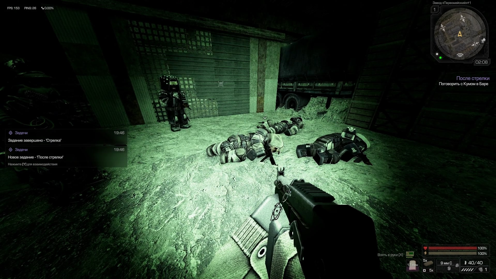

Квест берётся у бандита по кличке Могол на локации Агрокомплекс «Колос». Дальнейшие этапы проходят в Баре (репутация начисляется для базы в Баре).
Есть два пути:
Сторона Блаженных: в финале придётся подкупить Мустафу — собрать ему части мутантов и бартерные ресурсы.
Сторона Санитаров: в финале нужно поговорить с Моряком на Обочине (если выполнен его квест «Безопасность превыше всего»), либо с Кистенем и принести набор трофеев с территории Бара.
Если хотите пройти основную сюжетную линию и получить все достижения — рекомендую становиться на сторону Санитаров (Филателист). Для этого желательно сначала выполнить квест Моряка: «Безопасность превыше всего».
Прохождение
Перед стартом загляните к Диггерам и поставьте точку возрождения. Квест нелинейный, без возможности провала.
Агрокомплекс «Колос»: первые поиски
Поговорите с Моголом — он отправит вас искать членов своей банды.
Могол выдаёт квест
Пистон — лежит в зоне био‑2 и пси‑1. Можно спрыгнуть, быстро осмотреть труп и возродиться у Диггеров.
Труп Пистона
Ладан — на 2‑м этаже заброшенной стройки.
Труп Ладана
Окунь — за забором фермы на локации Яма.

Труп Окуня
Соберите ПДА всех троих и вернитесь к Моголу, сообщите о находках.
Бар: поручения Кума и «параллельная линия» Филателиста

Следующая встреча с Моголом — уже в Баре
Для первого поручения Кума нужен детектор широкого диапазона (САК‑1 или аналог).
Поговорите с Кумом — возьмите задание. Выйдя из его будки, вас остановит Посыльный Филателиста. Ответы не важны — идите к Филателисту на Полесское и поговорите с ним.
Кум

Филателист
Идите в Мёртвый Город. У левого края квестовой области включите поиск сигнала и двигайтесь к гаражам. Вход — через дыру в крыше.
Вход через крышу

Искомый электрощиток
Внутри взаимодействуйте со щитком и выберите ответы:
1[Осмотреть тайник]
1[Взять кейс, не вскрывая его]
Если «прикарманить» часть денег, Кум не выдаст финальную награду — получите меньше.
Вернитесь к Куму, затем отнесите другой кейс Адвокату на Полесское и снова отчитайтесь у Кума.
Адвокат
Выбор стороны
Теперь Кум позовёт вас на стрелку за пределами Бара, у толпы бандитов начнётся диалог. Сначала:
1 Кум?
1 И что ты думаешь?
Путь Санитаров
Выберите ответ:
2 Санитары сильны и влиятельны... [Поддержать Санитаров]
Могола пристрелят. Осмотрите его, поговорите с Филателистом — получите доп. награду.

Стрелка у Бара
Затем возвращайтесь к Куму в бар: ему нужны союзники с Югов зоны.
Если выполнен квест Моряка — отправляйтесь на Обочину и поговорите с Моряком (гайд).
Если квест Моряка провален — договаривайтесь с Кистенем (2‑й этаж Сельской школы), он запросит трофеи и бартерные ресурсы с территории Бара.
Метка на ЮгахМоряк
Кистень
Вернитесь к Куму — он выдаст финальную награду.
Путь Блаженных
Выберите ответ:
1 Не сегодня. Могол прав, Санитаров надо гасить! [Поддержать Могола]
Группа Кума расстреляет людей Филателиста. Осмотрите труп Филателиста и поговорите с Моголом — получите доп. награду.

Трупы санитаров
Вернитесь в Бар к Куму и поговорите с ним, он отправит на поиски союзников. На 2‑м этаже с другой стороны сидит Блаженный Мустафа — согласитесь принести ему трофеи (части мутантов и бартерные ресурсы).
Мустафа
Соберите/купите на аукционе всё необходимое, отдайте Мустафе и возвращайтесь к Куму — получите финальную награду.


 Тоник «Арни» ×3
Тоник «Арни» ×3 Энергетик «Жидень EXTRA» ×3
Энергетик «Жидень EXTRA» ×3 Подсумок с аптечками ученых ×2
Подсумок с аптечками ученых ×2